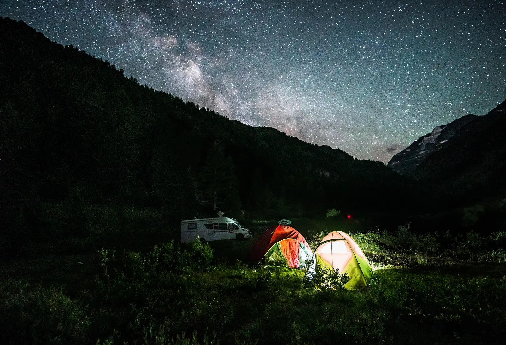
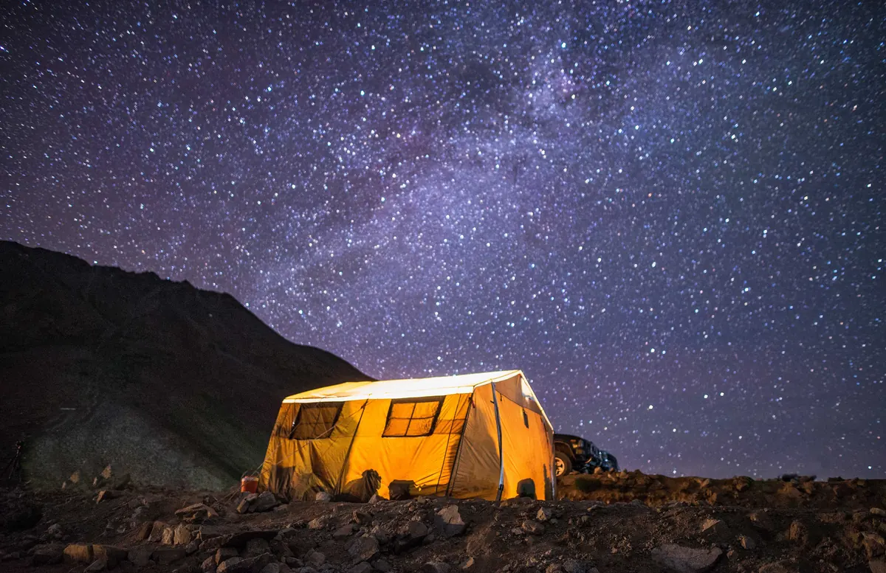
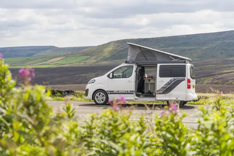
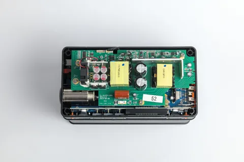
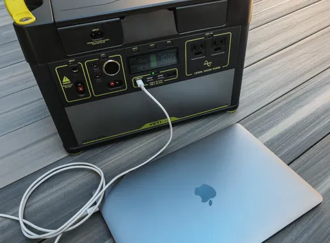
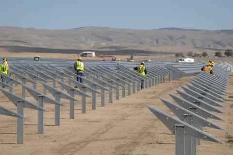
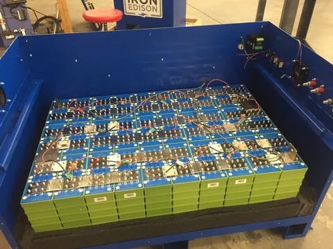
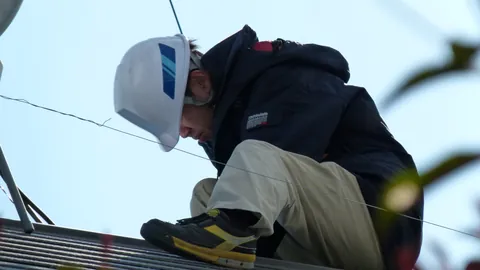

Calcula tu consumo real y acierta con el kit solar a la primera
Calculadora con datos de radiación de España, comparativas técnicas y guías de instalación para furgoneta camper, cabaña aislada y respaldo eléctrico en casa.
Calculadora de consumo y dimensionado solar
Mueve las horas de uso de cada aparato. Calculamos el consumo diario, la capacidad de batería con las pérdidas reales del sistema y los vatios-pico de panel que necesitas.
- Consumo diario estimado
- 0 Wh/día
- Equivalente a 12 V
- 0 Ah
- Batería mínima con pérdidas
- 0 Wh útiles
- Panel solar necesario
- 0 Wp
El cálculo aplica un 90 % de descarga útil (propio del LiFePO4), un 85 % de rendimiento del inversor y un 75 % de rendimiento fotovoltaico. Es una estimación de dimensionado, no una medición: aquí está la fórmula completa.
Los botones de compra son enlaces de afiliado. Si compras a través de ellos podemos recibir una comisión sin coste adicional para ti, y eso no cambia el orden de nuestras recomendaciones. Cómo nos financiamos.

Las mejores estaciones de energía portátiles de 2026
Solo incluimos modelos con batería LiFePO4: duran entre tres y cinco veces más ciclos que las de iones de litio clásicas y toleran mejor el calor de una furgoneta en verano.
| Modelo | Capacidad | Salida | Ciclos | Peso | Nota | |
|---|---|---|---|---|---|---|
| EcoFlow Delta 2 Mejor equilibrio general | 1.024 Wh | 1.800 Wpico 2.700 W | 3.000 al 80 % | 12 kg | 9,6/10 | Ver precio |
| Bluetti AC180 Más capacidad por euro | 1.152 Wh | 1.800 Wpico 2.700 W | 3.500 al 80 % | 16 kg | 9,4/10 | Ver precio |
| Jackery Explorer 1000 Plus Más ciclos y ampliable a 5 kWh | 1.264 Wh | 2.000 Wpico 4.000 W | 4.000 al 70 % | 14,5 kg | 9,2/10 | Ver precio |
Especificaciones según ficha de fabricante. Ver la comparativa completa con seis modelos, pros y contras.
Guías y análisis técnicos
Todo lo que hay que entender antes de gastar mil euros en una batería.

CamperEstación de energía portátil para furgoneta camper
Wh diarios, potencia de salida y modelos LiFePO4 según nevera, teletrabajo e inducción.

HogarEstación portátil para apagones en casa
Qué alimentar en un corte de luz, cuántos Wh hacen falta y qué modelos sirven de respaldo.

ComparativaEcoFlow Delta 2 vs Bluetti AC180: cuál comprar
Dos estaciones casi idénticas sobre el papel que se comportan de forma muy distinta en uso real.
ComparativaEcoFlow Delta 2 vs Jackery Explorer 1000 Plus
Capacidad, inducción, ciclos y ampliación: cuándo gana cada una.
ComparativaBluetti AC180 vs AC200MAX: ¿merece el salto a 2 kWh?
896 Wh y 12 kg de diferencia. Cuándo compensa doblar capacidad y cuándo es peso tirado.
Cocina eléctrica¿Se puede usar inducción con una estación portátil?
Cuánto gasta cada plato en vatios-hora, qué estaciones no saltan y cómo cocinar gastando la mitad.
DecisiónEstación portátil o instalación fija de 12 V
Pérdidas del inversor, carga desde el alternador, coste por vatio-hora y reventa: las cuentas reales.

Cálculo solarCuántos paneles solares necesito de verdad
La fórmula con horas de sol pico de España y los tres errores que arruinan el dimensionado.

Guía de bateríasBaterías LiFePO4 de 100 Ah: qué mirar antes de comprar
BMS, corriente de descarga, carga a baja temperatura y por qué el precio por ciclo manda.

SeguridadInstalar un kit solar de 12 V sin jugártela
Sección de cable, fusibles, orden de conexión y los fallos que provocan incendios en camper.
Preguntas frecuentes
¿Cuántos vatios-hora consume una furgoneta camper al día?
Una camper con frigorífico de compresor, luces LED, carga de móviles y portátil se mueve entre 600 y 900 Wh diarios. En cuanto entra una placa de inducción o un hervidor eléctrico, el consumo supera los 1.500 Wh y el dimensionado cambia por completo.
¿Qué capacidad de batería necesito para mi consumo?
Divide tu consumo diario entre 0,76: es el resultado de combinar el 90 % de descarga útil que admite el LiFePO4 con el 85 % de rendimiento del inversor. Para 800 Wh al día necesitas una estación de 1.050 Wh como mínimo.
¿Merece la pena una estación de energía o mejor baterías a 12 V?
La estación gana si no quieres tocar cableado, necesitas moverla o buscas respaldo doméstico ante apagones. Una instalación fija con batería, regulador MPPT e inversor sale entre un 30 % y un 40 % más barata por vatio-hora, pero exige montaje y criterio de seguridad eléctrica.
¿Por qué solo recomendáis baterías LiFePO4?
Porque el coste por ciclo es mucho mejor. Una estación de iones de litio NMC aguanta unos 800 ciclos hasta el 80 % de su capacidad; una LiFePO4 pasa de 3.000. Aunque cueste un 20 % más, el coste por kilovatio-hora almacenado a lo largo de su vida se reduce a la tercera parte. Además tolera mejor el calor de un vehículo aparcado al sol.